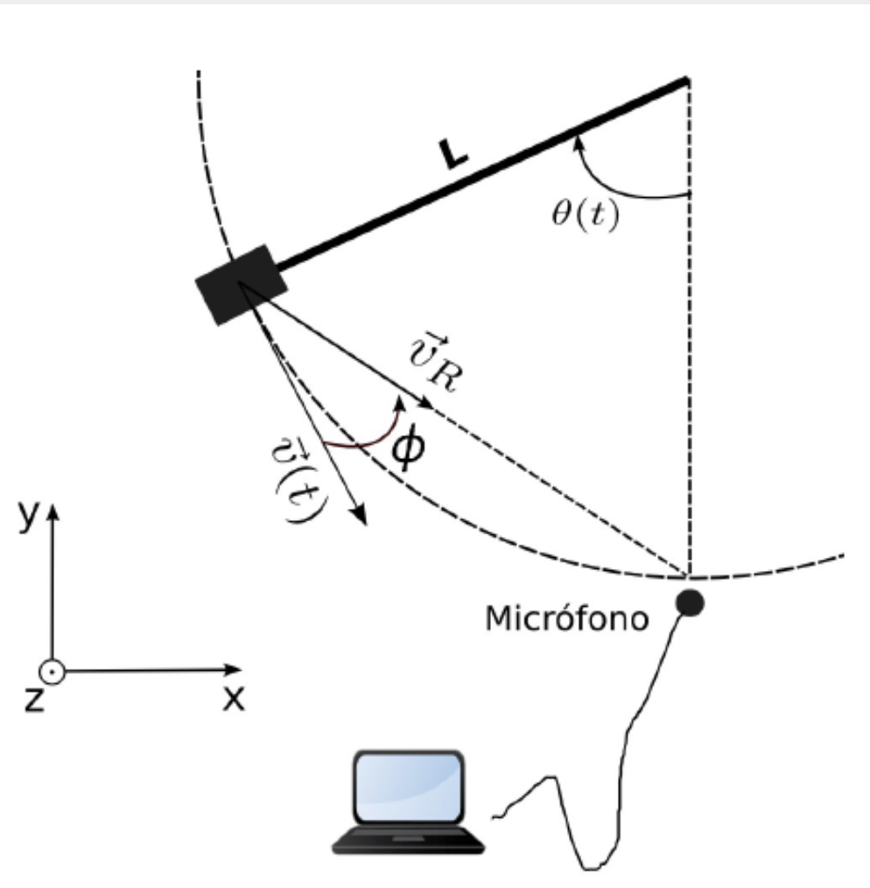

En este espacio encontrarás todo sobre nuestro proyecto, donde exploramos la física detrás de los sonidos que escuchamos todos los días y cómo el movimiento puede cambiar lo que percibimos. Explicaremos fenómenos como el efecto Doppler y como la usamos para calcular la velocidad del sonido, transformando conceptos complejos en ideas accesibles.
El efecto Doppler es un fenómeno que ocurre cuando una fuente de sonido se mueve con respecto a un oyente. ¿Alguna vez has notado cómo cambia el sonido de una ambulancia cuando se acerca y luego se aleja? Ese cambio en el tono no es una ilusión: es el efecto Doppler.
Cuando la fuente se acerca, las ondas sonoras se comprimen y el sonido se escucha más agudo es decir tiene una mayor frecuencia y cuando se aleja las ondas se expanden por lo cual se escucha más grave o sea una menor frecuencia.
Por otro lado, la velocidad del sonido es la rapidez en la que viajan las ondas y este depende del medio por el que viaja. En el aire a temperatura ambiente de (17 °C) que es la temperatura promedio de la ciudad de Cuenca su velocidad es de aproximadamente 342 m/s.
Para ejemplificar este efecto, se llevó a cabo un experimento en el que una persona se desplazó cierta distancia mientras portaba un teléfono móvil que emite una frecuencia de 5000 Hz. Un segundo dispositivo, situado en una posición fija, registró las variaciones de frecuencia ocasionadas por el movimiento relativo entre emisor y receptor. A continuación, se presenta el material audiovisual recopilado, en el que pueden apreciarse estos cambios de frecuencia en tiempo real.
|  |
Esta imagen representa la temática central de nuestro proyecto de física. En él, exploramos fenómenos como el efecto Doppler, la propagación del sonido, y cómo el movimiento influye en nuestra percepción auditiva. La imagen busca captar visualmente el dinamismo del sonido en movimiento. |
En este proyecto, hemos diseñado un experimento para estudiar el efecto Doppler utilizando un sistema péndulo-teléfono.
Un teléfono emisor, sujeto a un péndulo, genera un tono puro de frecuencia constante mientras oscila.
Un segundo teléfono, funcionando como receptor estacionario, registra los cambios de frecuencia causados por el movimiento relativo entre ambos dispositivos.
Los datos recogidos revelan claramente el fenómeno: cuando el péndulo se acerca al receptor, la frecuencia medida aumenta hasta un 1% en relación a la frecuencia emitida, aproximadamente 5050 Hz,
mientras que al alejarse disminuye hasta alrededor de 4050 Hz. Esta variación de ±50 Hz cumple con las predicciones teóricas del efecto Doppler para las velocidades alcanzadas por el péndulo.
El análisis de múltiples oscilaciones muestra cómo los picos de frecuencia se correlacionan sistemáticamente con la posición y velocidad del péndulo.
Los máximos de frecuencia ocurren en el punto más bajo de la trayectoria (velocidad máxima de acercamiento), mientras que los mínimos corresponden a la máxima velocidad de alejamiento.
Este experimento no solo demuestra cualitativamente el efecto Doppler, sino que permite una cuantificación precisa de la relación entre velocidad relativa y desplazamiento de frecuencia.
Puedes acceder a la carpeta del proyecto haciendo clic en el siguiente enlace: Ver carpeta en Google Drive .
realizado por Daniela Calle Sol Ávila Joe Abad José Cobos Jonnathan Pesantez